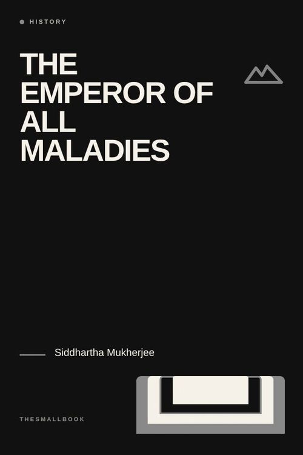

Why Did Big Tobacco Fail?
The 50-Year Denial That Killed Millions
📜 What Happened
By 1953, the industry's own funded research had linked smoking to lung cancer - so the industry funded its own answer: the 'Frank Statement to the American Public' promised impartial science, then never delivered it. For decades, companies paid scientists, buried results and repeated one phrase like a prayer: 'more research is needed.' In 1964 the Surgeon General's report settled the science; the industry settled the law. In 1994, an archive of internal documents surfaced and proved executives knew about addiction and cancer all along. In 1998, 46 states signed the Master Settlement Agreement - $206 billion over 25 years. In 2006, a federal judge ruled in 1,600 pages that the industry had conspired to defraud the American public.
☠️ The Fatal Mistake
Using the appearance of research as a shield - funding studies not to find truth but to keep 'more research is needed' true long enough.
🧠 The Lesson (Free for You)
When the science is inconvenient, commissioning 'further study' is a strategy, not a search. Tobacco's lesson: denial defers the bill but compounds it - every year of manufactured doubt cost the industry 100x the settlement. The cheapest time to tell the truth is always now.
The Antidote Book

Mukherjee's Pulitzer-winning history reads cancer as a biography: its first mention on Egyptian papyrus, its rise with industrial civilisation, the ce…
📖 OPEN THE FULL INTERACTIVE BREAKDOWN →Questions people ask about Big Tobacco
Why did Big Tobacco fail? Using the appearance of research as a shield - funding studies not to find truth but to keep 'more research is needed' true long enough.
How much was lost? $206B Master Settlement; millions of premature deaths
What is the lesson? When the science is inconvenient, commissioning 'further study' is a strategy, not a search. Tobacco's lesson: denial defers the bill but compounds it - every year of manufactured doubt cost the industry 100x the settlement. The cheapest time to tell the truth is always now.
Big Tobacco kyun fail hua? In simple English: Using the appearance of research as a shield - funding studies not to find truth but to keep 'more research is needed' true long enough. The cost was $206B Master Settlement; millions of premature deaths.
Keep digging
More historical failures · Open the full Graveyard
Read the antidote book summary: The Emperor of All Maladies
Related failures
- Why did The Churning of the Ocean fail? ~5000 BCE (epic) · The Great Co-operation That Produced the Poison First
- Why did The Nanda Empire fail? ~321 BCE · The Richest Empire in India, Lost Because the King Couldn't Keep a Promise
- Why did The Kurukshetra War fail? ~3000 BCE (epic) · The War Everyone Wanted That Destroyed Everyone Who Wanted It
- Why did The Harappan Collapse fail? ~1900 BCE · The Advanced Civilization That Vanished Into Its Own Success
- Why did Easter Island fail? ~1600 · They Cut Down the Last Tree
- Why did Qin Shi Huang fail? 210 BC · The Emperor Who Drank Immortality to Death
Questions people ask about Big Tobacco
Why did Big Tobacco fail? Using the appearance of research as a shield - funding studies not to find truth but to keep 'more research is needed' true long enough.
How much was lost? $206B Master Settlement; millions of premature deaths
What is the lesson? When the science is inconvenient, commissioning 'further study' is a strategy, not a search. Tobacco's lesson: denial defers the bill but compounds it - every year of manufactured doubt cost the industry 100x the settlement. The cheapest time to tell the truth is always now.
Big Tobacco kyun fail hua? In simple English: Using the appearance of research as a shield - funding studies not to find truth but to keep 'more research is needed' true long enough. The cost was $206B Master Settlement; millions of premature deaths.
Keep digging
More historical failures · Open the full Graveyard
Read the antidote book summary: The Emperor of All Maladies
Related failures
- Why did The Churning of the Ocean fail? ~5000 BCE (epic) · The Great Co-operation That Produced the Poison First
- Why did The Nanda Empire fail? ~321 BCE · The Richest Empire in India, Lost Because the King Couldn't Keep a Promise
- Why did The Kurukshetra War fail? ~3000 BCE (epic) · The War Everyone Wanted That Destroyed Everyone Who Wanted It
- Why did The Harappan Collapse fail? ~1900 BCE · The Advanced Civilization That Vanished Into Its Own Success
- Why did Easter Island fail? ~1600 · They Cut Down the Last Tree
- Why did Qin Shi Huang fail? 210 BC · The Emperor Who Drank Immortality to Death
Searchable, filterable, simple to read - they paid billions; you get the lesson.